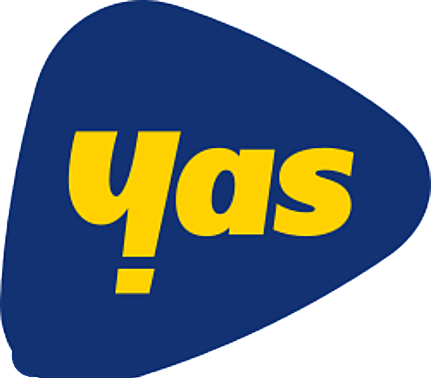
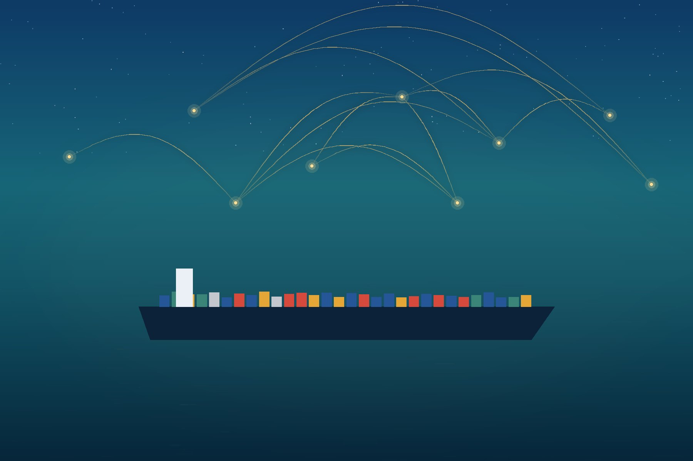

Dar es Salaam · Tanzania
One relationship. Five companies. One standard.
Logistics, commodities, marketing, property and cleaning — one group, one named contact, one standard of delivery.
Dar es Salaam

ClientTell us what you need
What are you trying to get done?
Describe it in your own words. We will name the company that handles it and show you why — no forms, no menus.
The group
Five companies that already know how to work together.
Most groups are a list. This one is wired: a shipment that needs a warehouse cleaned, a building that needs a campaign behind it. Hover a company to preview it — press it to go straight inside, no scrolling required.

Logistics & Procurement
Sourced, shipped,
cleared, delivered.
Strategic sourcing on one side, physical movement on the other, and one team holding both. Suppliers selected and managed, freight booked and tracked, customs cleared, stock held and distributed — accountability never changes hands halfway.
- Strategic procurement
- Supplier identification, qualification and purchasing, with the commercial terms held in writing.
- Freight & forwarding
- Sea, air and road movement booked, consolidated and tracked to the receiving site.
- Customs clearance
- Declarations and port formalities handled so consignments are not sitting while paperwork catches up.
- Warehousing & distribution
- Storage between shipments and last-mile delivery upcountry, on a schedule you set.
Industries
Where the group already works.
Real Estate
We manage property
we also own.
Which changes how it gets run. Buildings are acquired, developed, filled and maintained by a team that carries the same consequences an owner does — occupancy, condition and the value that follows from both.
- Acquisition
- Sites and buildings assessed on what they will cost to hold, not only what they cost to buy.
- Development
- Projects run from site through to lease-up, with one contact across the whole programme.
- Property management
- Tenants, maintenance and reporting handled so the building does not become your second job.
- Leasing
- Space brought to market and let, with the terms and the tenant covenant both in writing.
How we work
What happens after you get in touch.
Four steps. You will know the price and the timeline before anyone starts, and you will hear from us in between.
We listen
You tell us what needs moving, sourcing, building, marketing or maintaining. We ask questions. Nobody quotes a number yet.
You get it in writing
Deliverables, timeline, your named contact, and the price. If two of our companies are involved, the document says which and why.
We do the work
The same contact from start to finish — nobody swaps out halfway. You choose how often you want updating.
We stay
We sit down with you afterwards and go through what happened. Most of our clients come back. We build for the second job, not the first.
Selected work
Proof, not adjectives.
Yas Tanzania
Telecommunications · Client
ETERNA Holdings has worked with Yas Tanzania, one of the country's largest mobile networks. References are available on request.
This is the highest-value thing left to complete. Add the challenge, approach, execution,
result and any metrics to the caseStudies entry in content/eterna.js,
set published: true and rebuild. Until then the site claims nothing it cannot support.
The company
Why one owner across five companies helps you.
Each company has its own team and its own clients. All five answer to the same rules on delivery, reporting and conduct. So when a shipment turns out to need a warehouse cleaned, or a new building needs a campaign behind it, nobody hands you to a stranger.
Excellence
The work holds up when someone inspects it, not just when someone signs it off. A close deadline doesn't move the standard.
Integrity
What we put in writing is what happens. When something goes wrong, you hear it from us first.
Growth
Most of our work is repeat work. We build for the second job, not just the first.
Leadership is not published yet. Named people are among the strongest trust signals a holding
company has, and search and AI systems use them to identify the organisation. Add them to
leadership in content/eterna.js and set published: true.
Quotation
Build your request. We price it in writing.
Pick the services you need and the quantities. You get a referenced document to keep, and a named contact returns it priced by the next working day.
Which part of the group is this for?
If more than one applies, start with the main one — we route the rest internally.
What do you need from ?
Add the lines that apply and set the quantities.
Nothing added yet. Choose a service on the left.
Your details
So the priced quotation reaches the right person.
Your quotation request
Keep a copy, then send it. Prices are confirmed in writing after we understand the job.
Questions
Before you get in touch.
Which company do I contact?
Describe the problem rather than the category. We route it to the right company, and you deal with one named person even if two of them are involved.
How quickly do you reply?
By the next working day. Office hours are Monday to Friday, 08:00 to 17:00 EAT.
How is pricing handled?
Nobody quotes a number before understanding the job. Every price reaches you in writing alongside the deliverables, timeline and your named contact.
Can one project use more than one of your companies?
Yes, and it often does — a shipment that needs a warehouse cleaned, a building that needs a campaign. The scope document says which companies are involved and why.
Do you work outside Dar es Salaam?
Tell us where the work is and we will tell you honestly whether we are the right people for it.
Contact
Tell us the problem. We will tell you if we can fix it.
One shipment or the whole operation. If we are not the right people for it, we will say so — and usually tell you who is.
- Telephone
- +255 788 665 555
- Address
- P.O. Box 10235
Dar es Salaam, Tanzania - Hours
- Monday – Friday, 08:00 – 17:00 EAT
Checking local time…